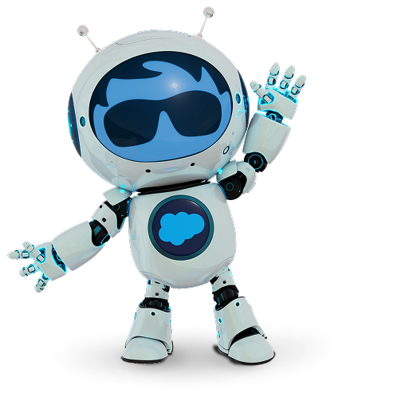

Avance semanal · Dirección
Avance semanal · Dirección
Betty FDE: avance de la semanaResumen ejecutivo · semana del 9 al 13 de noviembre de 2026
Qué se construyó, cómo lo estamos probando, qué definió Betterware y qué necesitamos para volver a abrir el flujo a Betty FDE.

Más control, más pruebas y una dependencia abierta
El equipo avanzó en tres frentes: que Betty pase a un ejecutivo de forma confiable, que el pedido extemporáneo funcione de punta a punta y que las reglas del negocio queden documentadas en un solo lugar. Falta un permiso para probar en producción.
Lo que ya está
- Escalamiento a ejecutivo más predecible: el sistema garantiza el pase y respeta el horario.
- Reglas de autenticación y de autorización por operación, ratificadas y en un documento de referencia.
- Banco de pruebas construido: la parte de reglas está completa y en verde; las conversaciones simuladas siguen en curso.
Lo que falta
- Autorización de Betterware para probar en producción.
- Cerrar las conversaciones simuladas del banco de pruebas.
- Tres decisiones de Betterware: autenticación (2) y zona horaria.
Pasar a un ejecutivo, sin depender del azar
La meta es que una distribuidora que necesita a una persona llegue a ella sin dar vueltas, y que nunca se le ofrezca un ejecutivo cuando el horario está cerrado. Cada etapa se probó contra una línea base fija: ninguna introdujo cambios de comportamiento sin explicar.
| Qué se hizo | Resultado | Etapas |
|---|---|---|
| Línea base de referencia | 95 conversaciones de referencia, con 3 corridas cada una, para medir cualquier cambio contra un punto fijo. | 0 |
| Pase garantizado por el sistema | En pedidos, pagos, preguntas frecuentes y emergencias, el pase a ejecutivo lo fuerza el sistema y deja de depender de que el modelo lo recuerde. Los folios inválidos se cuentan y, al repetirse, llevan al pase. | 2 |
| Horario antes de ofrecer | Se revisa el horario antes de ofrecer un ejecutivo. En las pruebas, cero ofertas con horario cerrado. | 4 |
| Contador y evaluación | Se cuentan las peticiones explícitas de ejecutivo, y cada escalamiento queda medido como ofrecido, aceptado o transferido. | 5 y 6 |
| Reglas en una tabla editable | Los criterios (por ejemplo, enojo y emergencia, que fuerzan el pase) viven en una tabla que se puede ajustar sin tocar el agente. | 7 |
| Instrucciones más ligeras | Se recortó el texto de instrucciones en varias etapas, hasta un 62% en el último bloque, sin cambiar el comportamiento. Menos texto significa respuestas más estables. | 1, 3 y 8 |
Trabajo realizado y probado en el entorno de pruebas.
Pedido extemporáneo, probado a fondo
El banco tiene 4,098 casos en 14 grupos: horarios, importes, códigos de distribuidora, aceptación y confirmación, linaje, contadores y registro, además de casos aleatorios. En paralelo se simulan conversaciones completas de la distribuidora con el modelo real.
Qué muestra
Las reglas del negocio están completas y estables. En las conversaciones, las fallas de rondas anteriores ya no aparecen en la última corrida; falta confirmarlo en vivo.
Qué sigue
Revisar las 6 fallas pendientes, repetir las conversaciones simuladas completas y confirmar las correcciones. Banco en curso
Las reglas del negocio, en un solo lugar
Se ordenó la documentación para que cualquier persona que se incorpore entienda qué debe cubrir Betty y por qué. Lo definido por Betterware quedó registrado con su fecha.
Documentos de referencia
- Matriz de autenticación y autorización: quién es la distribuidora y qué puede ver, por operación y por nivel de linaje.
- Matriz de escalamiento: qué escala Betty, cómo y hacia dónde.
- Guía de contexto: punto de entrada para el equipo, con las decisiones de Betterware y los pendientes.
- Pendientes técnicos: lo que falta alinear en el agente.
Lo que Betterware definió Confirmado
- 5 intentos de autenticación en total: 3 por código y 2 por referencia bancaria.
- Si no se completa, no se escala: se cierra la conversación.
- Mensaje de cierre confirmado: cordial, invita a volver a escribir cuando quiera.
Para decidir con Betterware Abierto
- Si la referencia bancaria se ofrece desde el primer fallo con código o solo al agotar los 3 intentos. Hoy se ofrece de inmediato.
- Si el conteo de intentos de autenticación y el de restablecer contraseña son independientes.
- La zona horaria de los horarios de atención.
Al revisar el agente se vio que hoy cuenta 3 intentos y escala. Se alineará con lo definido una vez resueltas las decisiones anteriores.
Probar con conversaciones reales, sin cargar el sistema
Betterware nos compartirá conversaciones reales para alimentar las pruebas. Así evitamos descargar de forma masiva desde el sistema de producción y cuidamos su capacidad de consulta.
Betterware comparte conversaciones
Una muestra representativa de lo que escriben las distribuidoras. Fecha y formato de entrega: por confirmar.
Se anonimizan y se vuelven casos de prueba
Sin datos personales: se retiran códigos, teléfonos y nombres antes de usarlas.
Se mide a Betty contra casos reales
Los casos reales complementan el banco simulado y muestran si Betty responde como esperan las distribuidoras.
Lo que necesitamos para reabrir el flujo
El flujo hacia Betty FDE sigue en pausa. Esto es lo que lo desbloquea y lo que el equipo hará mientras tanto.
Autorización de pruebas en producción Betterware
Es la condición para volver a abrir el flujo a Betty FDE. Sin ella el equipo sigue probando solo en el entorno de pruebas.
Cerrar el banco de pruebas
Terminar la ejecución completa, resolver las fallas pendientes y entregar resultados finales.
Decisiones sobre autenticación
Con las respuestas de Betterware, el agente se alinea a los 5 intentos, al cierre sin escalar y al mensaje confirmado.
Recibir y usar las conversaciones reales
Incorporarlas, anonimizadas, a las pruebas de la siguiente semana.
GraciasBetty FDE · avance semanal
Seguimos trabajando en el entorno de pruebas. En cuanto tengamos la autorización y los resultados finales, actualizamos este resumen.